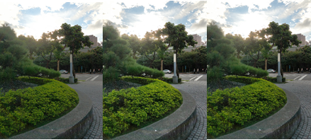
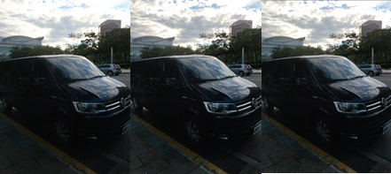
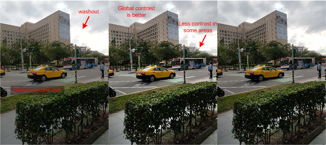
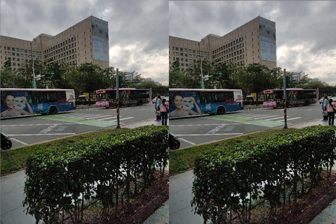
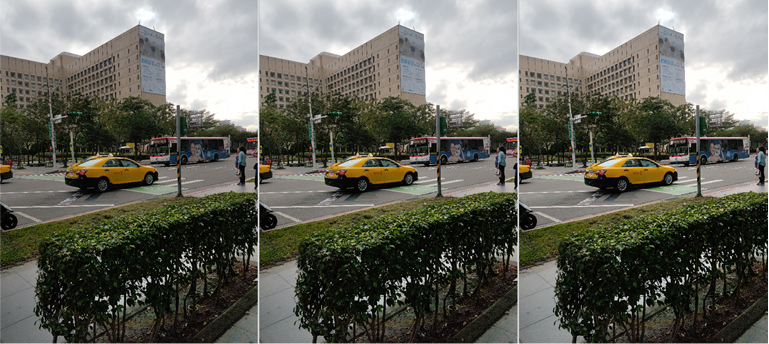
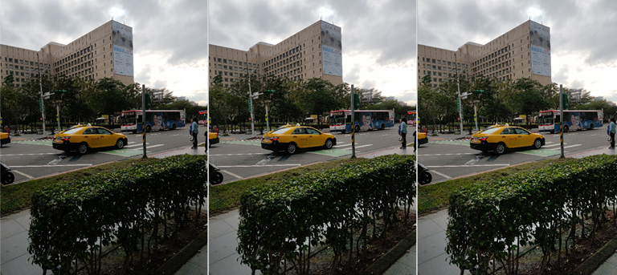
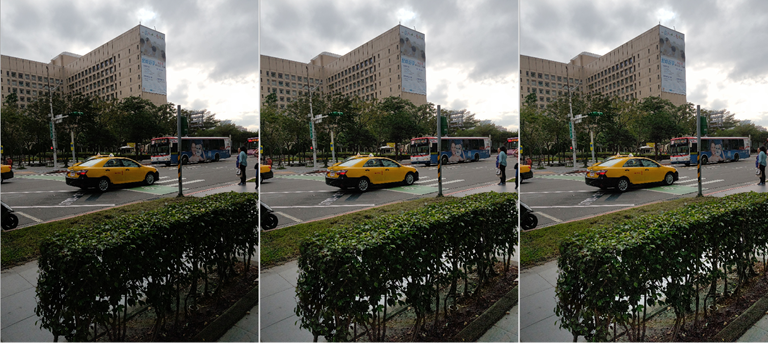
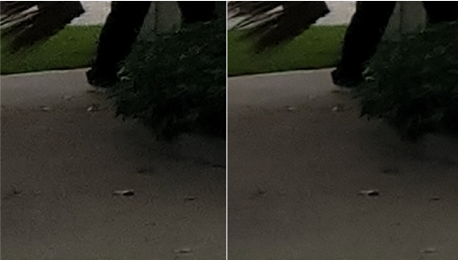
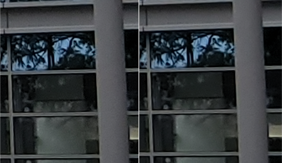

Figure : gtm_percentage example, where (L) GTM 100%, (C) LTM 100%, (R) GTM 20%, LTM
80%

Figure : ltm_percentage example, where (L) GTM 100%, (C) LTM 100%, (R) GTM 20%, LTM
80%

To balance global and local contrast, a mix of GTM and LTM for ADRC compensation is
better. In the following example, the total gain is 8x, the DRC gain is 4x, and the
dark_boosting gain is 2x.
Figure : GTM and LTM percentage example, where (L) GTM 100%, (C) LTM 100%, (R) GTM
20%, LTM 80%

LTM supports a maximum DRC gain up to 8.0x. If the DRC gain is greater than 8.0x, an LTM
percentage of 100% would automatically clamped in software at 75%. In the following
example, the total gain is 16x, the DRC gain is 8x, and dark_boosting gain is 2x.
Figure : GTM and LTM percentage example, where (L) LTM 100% and (R) GTM 20%, LTM
80%

The knee_out_mid parameter controls compensation levels from
underexposed to normal exposure. Dark and highlight regions are not impacted. In the
following example, the total gain is 8x, the DRC gain is 4x, and the dark_boosting_gain
is 2x.
Figure : knee_out_mid example, where (L) value is 0.2, (C) value is 0.3, and (R) value
is 0.4

The dark_boost_ratio parameter controls the boosting ratio from AEC
to dynamically enhance dark areas. In the following example, the dark_boosting gain from
AEC is 2.0x.
Figure : dark_boost_ratio example, where (L) value is 0, (C) value is 0.5, and (R)
value is 1

The dark_boosting_offset parameter sets the boosting gain to enhance
dark areas via lux and gain triggers.
Figure : dark_boost_offset example, where (L) value is 0, (C) value is 1, and (R)
value is 2

The following example shows the
lnr_gain_arr parameter used in a real outdoor scene.
Figure : (L) Curve 1, (R) Curve 2

The
blend_lnr_gain_arr parameter balances noise after tuning the
lnr_gain_arr parameter based on the DRC gain.
Figure : (L) Curve 1, (R) Curve 2
